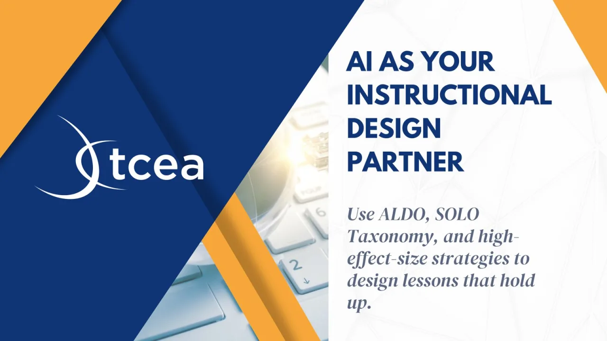
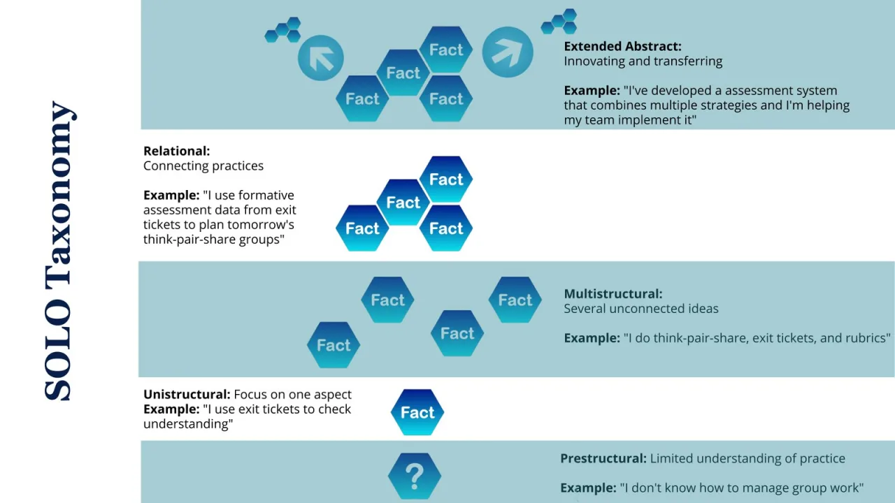
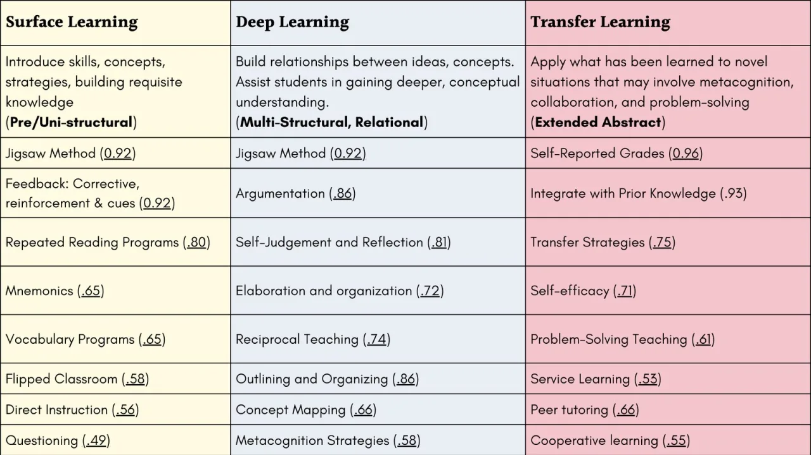
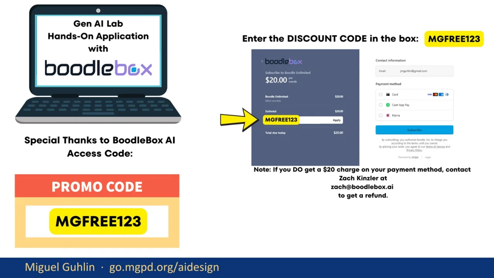

This opening slide frames the whole session. I want participants to see Gen AI as a design partner, not as a replacement for professional judgment. The promise here is practical: use ALDO, SOLO Taxonomy, and high-effect-size strategies to build lessons that hold up under scrutiny. I am also setting the tone early. The tools matter, but the structure matters more. If the structure is weak, Gen AI will usually give us a polished weak draft. From here, I move into who I am, why this toolset exists, and what participants should expect to leave with.
This slide gives the quick professional context. I am not spending much time on biography, but I do want participants to know the perspective behind the session. My work sits across classroom practice, district technology, professional development, and writing for educators. That mix matters because the session is not about novelty. It is about making Gen AI useful in the daily work of planning instruction, coaching teachers, and checking quality. After this, I point participants toward the resources that support the session.
Here I introduce DrawSplat as part of the larger free toolset for K-16 education. The point is not to tour every tool. The point is to show that a standalone web page can guide instructional design work in a way that is easier to share than a private chatbot setup. I want participants to leave with a practical definition of Gen AI as a partner, with ALDO as the structure, and with SOLO and Visible Learning as checks for quality. That gives us the frame for the rest of the session.
This slide is the resource stop. Participants need one place to find the slides, the Google Doc, the AI Design Companion website, and the BoodleBox strategy partner. I keep this simple because people will come back to it later. The important message is that the session is not a one-time demo. The resources are meant to be reused after the conference, especially when someone is planning a lesson, coaching a teacher, or checking whether a Gen AI draft has enough instructional substance.
These are the three concrete takeaways. First, participants get background on evidence-based teaching: SOLO, ALDO, and high-effect-size strategies. Second, they get web-based resources and a Gen AI bot that can guide the work. Third, they get access to BoodleBox Unlimited for a limited period. I am putting this up front so the session has a clear contract. By the end, participants should be able to use ALDO as a conversation, differentiate a design for different roles, and audit the result before using it.
This section begins with evidence-based teaching. I define it plainly: choosing what to do in class based on what has actually been shown to work. That matters because Gen AI can generate a lesson that looks complete without being well designed. Evidence-based teaching gives us a way to push past surface polish. I also want participants to understand that ALDO is not a prompt trick. It is a conversation structure. We are going to use Gen AI as the coach in that conversation, not as the person who owns the lesson.
This slide lays out the ALDO conversation. The five steps are relationship building, pre-assessment, strategic instruction, post-assessment, and reflection. Notice the order. A coach does not jump straight to strategies. The coach starts with context, learners, trust, and what the teacher already knows. Then the coach helps select instruction and plan evidence of movement. That order is what most one-shot Gen AI lesson drafts skip. ALDO slows the work down enough to make the design stronger.
This visual shows ALDO as a framework rather than a list. Relationship building comes first, because context and trust shape the rest of the work. Pre-assessment asks what learners already bring. Strategic instruction is where high-effect-size strategies enter. Post-assessment checks movement, not whether the activity felt pleasant. Reflection closes the loop. The key point is that I am giving Gen AI a sequence to follow. If it skips a step or weakens a step, I can call that out clearly.
SOLO Taxonomy is the second lens. It helps us judge how deep the learning task is. Prestructural means there are no meaningful connections yet. Unistructural and multistructural are surface levels: one idea, or several ideas not yet connected. Relational is where ideas are integrated. Extended abstract is transfer to new contexts. Gen AI often creates activities that look full because they contain many bullets. SOLO helps us ask whether those bullets actually connect and transfer.

This version of SOLO makes the levels more concrete. A teacher saying, ‘I use exit tickets,’ is at one level. A teacher connecting exit ticket data to tomorrow’s grouping decisions is at a deeper level. That distinction matters for lesson design. If a Gen AI draft asks learners only to define, list, or discuss, it may stay at multistructural. We want to push toward relational and extended abstract work, where learners connect practices, test ideas, and transfer what they know.
Now I connect SOLO to phases of learning. Surface learning is where learners acquire vocabulary, facts, and concepts. Deep learning is where they organize and connect those ideas. Transfer is where they apply learning to a new problem or context. I use Hattie’s effect sizes here as a practical filter. I am not asking participants to memorize the numbers. I want them to see that strategy selection should match the phase of learning, not just the topic.

This table gives examples of strategies across surface, deep, and transfer learning. It also reinforces that the same strategy can sometimes work in more than one phase, depending on how it is used. Jigsaw is one example. Direct instruction may be useful for surface learning, while argumentation and reciprocal teaching move into deeper connections. Transfer strategies and problem solving help learners apply knowledge in new situations. The point is to choose intentionally, then check whether the activity matches the phase.
This slide puts SOLO, learning phases, and high-effect-size strategies into one view. I use it as a bridge from theory to design decisions. If the desired learning is prestructural or unistructural, the instructional move is different from a lesson aimed at transfer. This is where Gen AI can help, but only if we give it the framework and require it to label its choices. Without that requirement, it tends to produce generic activities that look reasonable but do not show the learning pathway.
This alternate visual makes the surface, deep, and transfer progression easier to see. Surface learning builds foundational knowledge and vocabulary. Deep learning connects ideas and builds conceptual understanding. Transfer learning asks students to apply knowledge to new situations. I use this slide to remind participants that a lesson does not become stronger just because it has more activities. It becomes stronger when the activities move learners through the right phase at the right time.
This infographic brings together ALDO and ACE. ALDO is the design conversation. ACE is the learning routine: articulate, connect, and extend. The important connection is that both push against the same problem. Gen AI can produce a polished artifact quickly, but we still need to see whether learners can name the idea, connect it, and use it somewhere new. This gives participants a simple way to audit a draft and a simple way to ask students to show their thinking.
This is the honest slide. Gen AI fails in predictable ways. It gives generic output when it does not know the context. It sequences instruction poorly while sounding confident. It can invent citations, effect sizes, or research titles. It also lacks phase awareness unless we explicitly require it. I do not want participants to avoid Gen AI because of those failures. I want them to expect the failures and build an audit step that catches them before the lesson reaches students.
This slide repeats the takeaways, but with the updated access language. It gives me a clean checkpoint before moving from evidence-based teaching into the companion website. I remind participants of the three pieces: the instructional design background, the web-based resource and bot, and the BoodleBox access. The session now shifts from the framework to the tools that help people apply it. That transition matters because tools without a framework are easy to misuse.
Part two introduces the companion website. This is where the work becomes easier to reuse. A website can guide the same kind of ALDO conversation a custom bot might support, but it is easier to share, easier to open, and easier to revisit. I use this section to show participants that a well-built web resource can reduce friction. The goal is not to replace good coaching. The goal is to make the coaching structure available when a coach is not sitting next to you.
This screenshot shows the AI Instructional Design Companion site. I point out that it starts with evidence-based teaching rather than a blank prompt box. That choice matters. The site is designed to ground the user before they ask Gen AI to generate anything. It gives a reference-first workflow, then builds with ALDO. This reduces the chance that a chatbot will invent its own sequence or drift into generic lesson planning. The website becomes a guardrail.
This screenshot moves into the ALDO conversation prompt area of the companion site. I want participants to see that the prompt is not complicated. It is structured. The prompt tells the chatbot to act as an instructional coach and walk the user through ALDO one step at a time. That small shift changes the task. Instead of asking for a finished lesson immediately, the user asks for a coached design conversation. That is the core move.
This is the copy-ready ALDO prompt. I slow down here because this is one of the most reusable parts of the session. The prompt asks the chatbot to act as an instructional coach, identify the topic and learners, and walk through relationship, pre-assessment, strategic instruction, post-assessment, and reflection. It also requires high-effect-size strategies, SOLO level labels, clarifying questions, and user-provided sources. That keeps the work grounded instead of letting the chatbot freewrite.
The TEKS-aligned prompt library extends the same idea across grade bands, roles, subjects, and purposes. I want participants to notice that the prompts do not ask the chatbot to invent TEKS. They remind the user to paste or attach the exact current expectation. That is a practical safety move. The library is meant to support teachers, coaches, and instructional leaders while keeping ALDO, SOLO, and high-effect-size strategies in the foreground.
This slide shows the downloadable source files and two ways to use them. One path is a standard retrieval-augmented setup where source files are uploaded into a project or chatbot workspace. The other is a lighter folder-based approach for tools such as NotebookLM. I use this to reinforce the larger habit: give Gen AI the source material first. Do not ask it to guess. The more grounded the source set is, the better the instructional design conversation becomes.
This is another checkpoint slide before part three. I use it to reset the room and make sure the takeaways still feel clear. The first part gave the research frame. The second part showed the companion website. Now we move into the BoodleBox strategy partner. The repeated slide is intentional as a pacing device, but the notes here focus on transition. Participants should understand that the next tool is not separate from the framework. It is another way to run the same evidence-based design conversation.
Part three introduces the TCEA Strategy Partner inside BoodleBox Unlimited. This is the bot-based version of the support workflow. I frame it carefully: the bot is useful because it has a defined job. It helps with strategy selection, lesson design, classroom integration, coaching, and practical resources. It should not be treated as an authority without review. The same audit rules still apply: check the phase of learning, the SOLO level, the effect-size claim, and the fit for your learners.
This slide gives the direct strategy partner link. I leave it on screen long enough for participants to open it or bookmark it. The bot is meant to serve as a personalized learning support tool, but access and account setup can slow people down. I keep the explanation simple here. Open the link, start a new chat, and use it with a specific instructional need. The more specific the lesson, strategy, or coaching context, the more useful the response will be.
Here I explain the BoodleBox access details. Participants need at least a free BoodleBox account, and the code provides the limited pro access described on the slide. I also connect the access back to the purpose. This is not just a giveaway. It is a chance to test a strategy partner with real instructional design work. I encourage participants to bring a lesson, a coaching cycle, or a campus implementation need into the tool rather than experimenting with abstract prompts.

This slide shows where the discount code goes and includes the contact note if a charge appears. I do not want this to become the focus of the session, but it is important enough to show clearly. The practical instruction is simple: enter the code exactly as shown, check that it applies, and follow the refund contact guidance if something goes wrong. Once access is settled, the real work is using the strategy partner with strong source material and clear instructional context.
This is a reminder slide for the strategy partner link. I use it as a reset after the account setup details. If people got pulled into login screens or payment screens, this brings them back to the actual tool. The next slides show what the strategy partner can do. I want participants to shift from access logistics to instructional uses: strategy support, classroom integration, coaching and goal setting, LEARNS, templates, and Gen AI integration ideas.
The first major capability is evidence-based strategy support. The strategy partner can recommend high-effect-size strategies, connect them to surface, deep, and transfer phases, and align them with SOLO or ALDO. This is useful when a teacher knows the lesson topic but is unsure how to structure the learning sequence. The caution is the same as before: verify the effect sizes and check the fit. A recommendation is a starting point, not a substitute for professional judgment.
This slide shows classroom integration tools. The strategy partner can suggest tools such as MagicSchool, Padlet, and Google tools for teaching, feedback, collaboration, and reflection. It can also connect those tools to EduProtocols. I want participants to hear the distinction between tool listing and instructional integration. A list of tools is easy. The harder work is asking what role the tool plays in the learning phase and how it supports evidence of student movement.
Here the focus shifts to coaching and goal setting. The strategy partner can guide users through the TCEA EIIR Coaching Cycle and help develop RISE goals. It can also provide sentence stems, reflection prompts, and self-assessments. This is a good example of Gen AI supporting adult learning, not just student-facing lessons. Used well, it can help a coach prepare for a conversation, surface questions, and create a clearer path from goal to implementation.
This slide introduces the LEARNS framework: Locate, Explore, Apply, Review, Nurture, and Shine. The strategy partner can help plan instructional cycles through that sequence and match each step to classroom actions and technology supports. I use this to show that the bot is not limited to one framework. The important thing is to name the framework, define the steps, and ask the tool to stay inside that structure rather than improvising its own version.
This capability is about practical tools and templates. The strategy partner can help adapt classroom protocols such as Jigsaw, Iron Chef, Thin Slides, Sketch and Tell, and Fast and Curious. It can also draft graphic organizers, rubrics, checklists, and reflection logs. I emphasize the word adapt. A protocol is only useful when it fits the content, the learners, and the time available. Gen AI can draft quickly, but the educator still decides what belongs in the classroom.
This slide shows how the strategy partner can support Gen AI integration ideas. It can help design lessons where Gen AI supports feedback, formative assessment, or content generation. It can also curate subject-specific prompts for science, math, English language arts, and social studies. I treat this as a design question, not a novelty question. The best prompt is not the flashiest prompt. It is the one that supports the learning target and leaves evidence we can inspect.
This slide highlights export options. If someone is working on a specific lesson, strategy, coaching cycle, or tech integration, the tool can build or adapt content and then move it into Word or PDF. That is useful because educators often need artifacts they can share, print, revise, or submit. I remind participants that export is the end of the workflow, not the beginning. First comes context, source material, ALDO, SOLO, and phase alignment. Then we export the polished artifact.
This slide points to DrawSplat Markdown Studio. It is a practical cleanup tool for the writing and publishing side of the work. You can paste Markdown, clean formatting issues, strip common AI writing tells, find and replace, preview rendered HTML, and copy WordPress-ready block code. I include it because instructional design often turns into publishing: handouts, blog posts, course pages, and resource documents. Cleanup matters when the final product has to be usable by real people.
This slide gives sample prompts teachers can adapt. The categories cover lesson planning, instructional strategies, coaching and professional development, assessment, and feedback. I would not present these as perfect prompts. They are starter moves. The stronger version comes when a teacher adds grade level, standards, learner context, available time, sources, and an ALDO sequence. I use this slide to show how familiar teacher tasks can be turned into better Gen AI conversations with just a little structure.
This closing resource slide returns to DrawSplat. I use it to remind participants that the session sits inside a larger ecosystem of free tools for K-16 education. The message is practical: keep using the tools that lower friction, but keep the instructional frame in charge. Whether the support comes from a website, a prompt library, a bot, or a publishing tool, the question stays the same. Does this help design learning that students can articulate, connect, and extend?
This final slide is intentionally simple. I use it as the quiet landing point after the tools and links. The closing message is that Gen AI can be a useful instructional design partner when we give it structure, sources, and an audit step. ALDO gives the conversation shape. SOLO tells us how deep the learning goes. Visible Learning helps us choose strategies more deliberately. The next step is to take one real lesson and run it through the process before the idea fades.